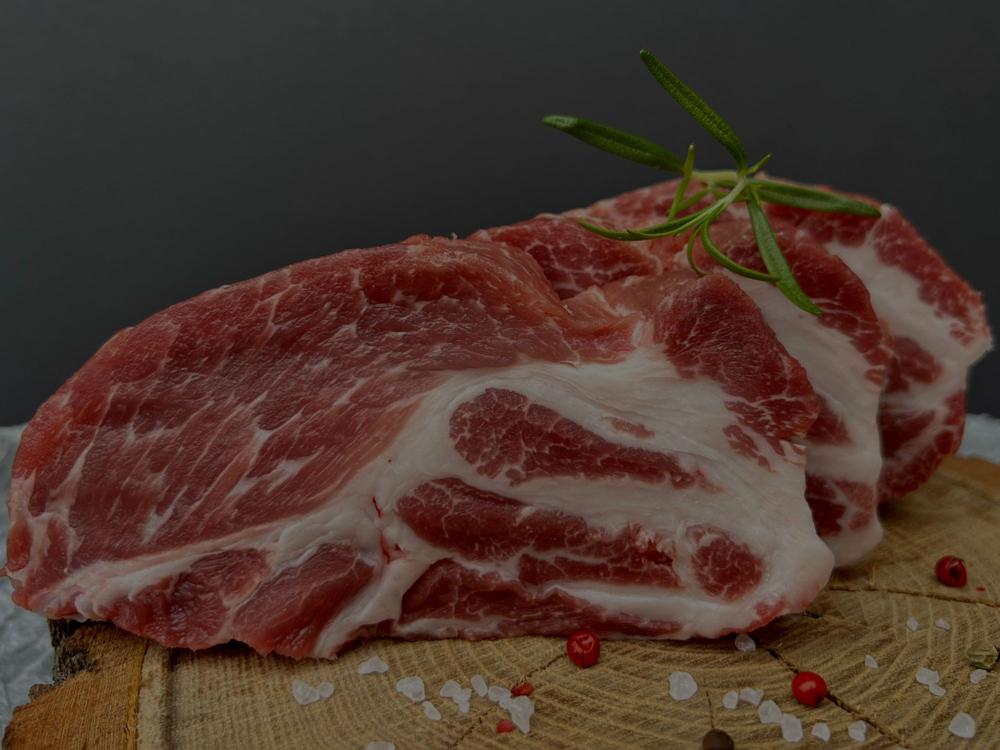
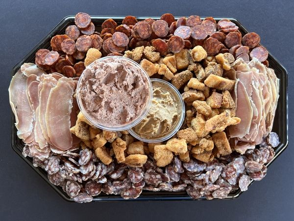

A gazdaság
Mi neveljük, mi dolgozzuk fel, mi visszük ki
A fő tevékenységünk a mangalica-tenyésztés. Amit a webshopban látsz, az a saját állományunkból, a saját kisüzemünkből érkezik.
2 × 600
férőhelyes, állatbarát épület a telepen
MOE
által eredetigazolt állomány
76
termék a gesztelyi kisüzemből
4 nap
járat hetente, saját autóval
A tenyészet
Korszerű, állatbarát telepen neveljük a mangalicát. A takarmányuk GMO-mentes keverék, gabonafélékre és olajos magvakra épül. Az állomány származását a Mangalicatenyésztők Országos Egyesülete igazolja.

A gesztelyi kisüzem
A feldolgozás Gesztelyen történik, a régi ízek és hagyományok szerint: bükkfán füstölünk, hagyományos fűszerezéssel, kis tételekben. Kolbász, szalámi, szalonna, hurka, zsír és tepertő – mind innen.
A saját járat
Nem adjuk át futárcégnek. Kedden, szerdán, csütörtökön és pénteken a saját járatunk viszi ki a rendeléseket Budapestre, Borsodba, Hajdú-Biharba és Szabolcsba.
Séfekkel dolgozunk
Dávid chef és Lázár chef a mi mangalicánkból főz
Kamadóban, bográcsban, zsemlébe – a receptjeiket videóval együtt a Receptek oldalon gyűjtjük.
Receptek